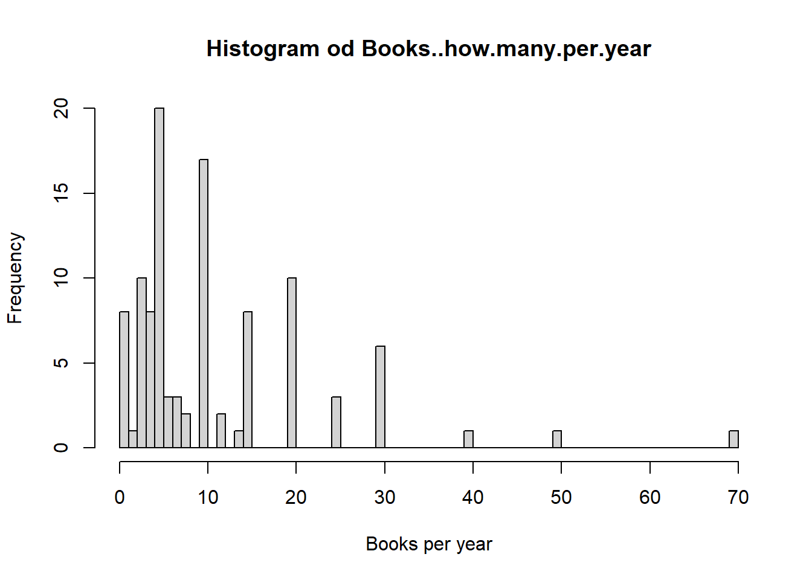
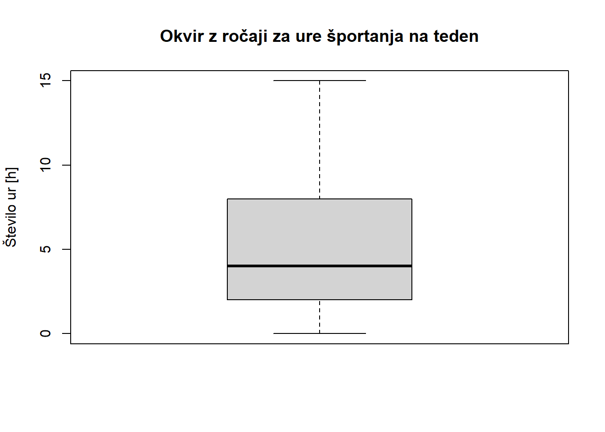
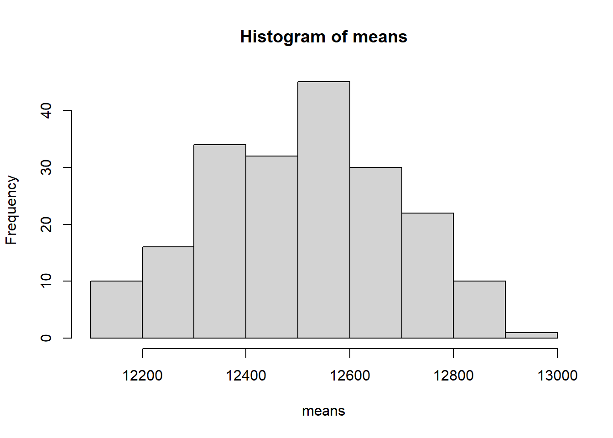
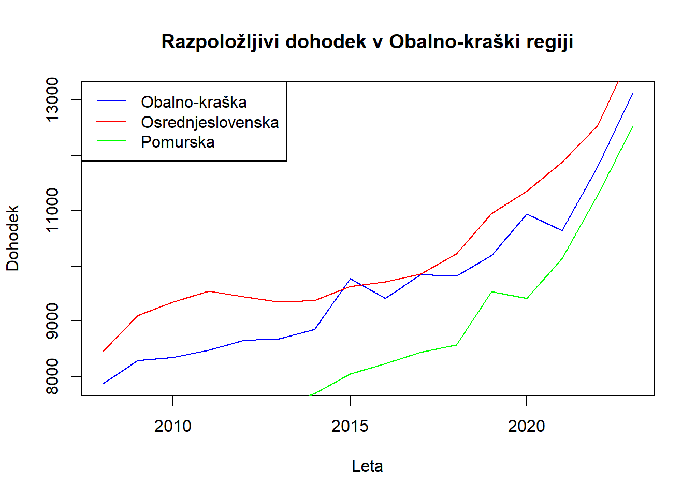

my.data <- read.delim("data.txt")Kviz 1
x <- 2
z <- 8
my.data <- my.data[unique(c(seq(x, nrow(my.data), 10), seq(z, nrow(my.data), 10))), ] %>%
as.data.frame()Books..how.many.per.year
Narišite histogram spremenljivke Books..how.many.per.year. Kakšne oblike je porazdelitev? Poročajte ustrezno mero središčnosti in mero variabilnosti glede na obliko porazdelitve. Utemeljite vašo odločitev.
col <- my.data$Books..how.many.per.year
hist(col,
xlab = "Books per year",
breaks = 75,
main = "Histogram od Books..how.many.per.year")
Me <- median(col)
avg <- mean(col)
Me;avg[1] 7[1] 11.09524Porazdelitev je asimetrična (v desno).
Mera središčnosti - Mediana, saj imajo podatki osamelce, ki kvarijo vrednost aritmetične sredine in ker je porazdelitev asimetrična.
Mera variabilnosti - Interkvartilni razpon, zaradi osamelcev.
Sport..hours.per.week..
Narišite okvir z ročaji spremenljivke Sport..hours.per.week.. Poročajte vse pomembne vrednosti iz grafa in jih interpretirajte. Ali vidite kakšen osamelec? Obrazložite izraz.
col <- my.data$Sport..hours.per.week.
boxplot(col,
main = "Okvir z ročaji za ure športanja na teden",
ylab = "Število ur [h]")
Max vrednost je 15, min vrednost je 0. Mediana je malo manj kot 5. Večina vrednosti se pojavi med cca 2.5 in 8. Mediana je manjša od aritmetične sredine, torej je porazdelitev asimetrična (v desno).
Osamelci so vrednosti, ki se veliko razlikujejo od večine ostalih vrednosti.
Obseg kroga
Napišite funkcijo, ki bo odvisna od vrednosti r in bo vrnila obseg kroga s polmerom r. Izračunajte obseg kroga s polmerom r = x (kjer je x je zadnja števka vaše vpisne številke).
obseg_kroga <- function(r) {
return(2 * pi * r)
}
x <- 2
obseg_kroga(r = x)[1] 12.56637Razpoložljivi dohodek gospodinjstev
Na spletni strani Statističnega urada Republike Slovenije poiščite podatke za Razpoložljivi dohodek gospodinjstev (EUR), statistične regije, Slovenija, letno. Izberite podatke Povprečni dohodek na člana gospodinjstva za vse statistične regije (brez Slovenije), za vsa razpoložljiva leta in za Dohodek po socialnih transferjih. Očistite podatke in jih uvozite v R.
df <- read.csv("sursi1.csv", sep = ";", dec = ".")
names(df)[-c(1,2)] <- 2008:2023
head(df, 3) MERITVE STATISTIČNA.REGIJA 2008 2009 2010
1 Povprečni dohodek na člana gospodinjstva Pomurska 6366 6836 7099
2 Povprečni dohodek na člana gospodinjstva Podravska 6897 7799 7852
3 Povprečni dohodek na člana gospodinjstva Koroška 6900 7343 7194
2011 2012 2013 2014 2015 2016 2017 2018 2019 2020 2021 2022 2023
1 7071 7251 7447 7693 8050 8235 8440 8571 9541 9411 10140 11287 12534
2 8043 8140 8094 8196 8422 8291 8459 8882 9734 10037 10806 11414 12246
3 7727 8192 7968 7995 8217 8463 8585 8756 9558 9668 10909 11522 12200- Naj podatki za leto 2023 predstavljajo vašo populacijo. Izračunajte populacijsko povprečje. Izvedite simulacijo, kjer 200-krat ponovite izbiranje vzorca velikosti 6 in narišite histogram vzorčnih povprečij.
N <- df[, "2023"]Populacijsko povprečje:
mean(N)[1] 12510.08Simulacija vzorcev:
m <- 200
n <- 6
mat <- matrix(0, m, n)
means <- rep(0, m)
for (i in 1:m) {
vzorec <- sample(N, 6, F)
mat[i, ] <- vzorec
means[i] <- mean(vzorec)
}
hist(means)
Predstavite podatke za statistično regijo
Obalno-kraškagrafično.Na istem grafu predstavite podatke za regiji Osrednjeslovenska in Pomurska. Kakšna je povprečna razlika teh dveh vrednosti skozi leta?
ok <- df[df$STATISTIČNA.REGIJA == "Obalno-kraška", -(1:2)]
os <- df[df$STATISTIČNA.REGIJA == "Osrednjeslovenska", -(1:2)]
po <- df[df$STATISTIČNA.REGIJA == "Pomurska", -(1:2)]
simp <- \(vec){
return(simplify(vec[1,]))
}
plot(x = names(ok),
y = simp(ok),
type = "l",
xlab = "Leta",
ylab = "Dohodek",
ylim = c(min(ok), max(ok)),
main = "Razpoložljivi dohodek v Obalno-kraški regiji",
col = "blue"
)
lines(x = names(os),
y = simp(os),
col = "red")
lines(x = names(po),
y = simp(po),
col = "green")
legend("topleft",
legend = c("Obalno-kraška", "Osrednjeslovenska", "Pomurska"),
col = c("blue", "red", "green"),
lty = 1)
Povprečna razlika vrednosti za osrednjeslovensko in pomursko regijo skozi leta:
razlike <- {simp(vec = os) - simp(vec = po)} %>% {names(.) <- NULL; .}
mean(razlike)[1] 1794.688